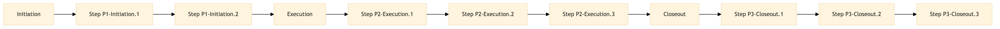

| Role | Steps |
|---|---|
| Revenue Manager | P1-Initiation.1 P1-Initiation.2 P2-Execution.2 P3-Closeout.2 |
| Market Analyst | P2-Execution.1 |
| Sales Manager, Marketing Coordinator | P2-Execution.3 |
| Step | Name | Role | System | Input | Output | KPI | Dec? | Exc? | Pain Point / Risk |
|---|---|---|---|---|---|---|---|---|---|
| P1-Initiation.1 | Review Financial Reports | Revenue Manager | Oracle OPERA Cloud | Monthly financial reports from Oracle OPERA Cloud | Sales performance summary report | Less than 2 hours per month | Y | N | Manual data entry errors leading to inaccurate analysis |
| P1-Initiation.2 | Identify Performance Gaps | Revenue Manager | Oracle OPERA Cloud, IDeaS G3 RMS | Sales performance summary report and revenue forecast data from IDeaS G3 RMS | List of underperforming segments or periods | Less than 1 hour per month | Y | N | Difficulty in quickly identifying trends and anomalies |
| P2-Execution.1 | Analyze Market Trends | Market Analyst | SynXis CRS, Amadeus Delphi.fdc | Competitive market data from SynXis CRS and Amadeus Delphi.fdc | Comprehensive market trends report | Less than 3 hours per month | Y | N | Inconsistent data sources leading to delays |
| P2-Execution.2 | Develop Strategies | Revenue Manager, Sales Manager | Oracle OPERA Cloud, Marriott Bonvoy CRM | Sales performance summary report and market trends report | Strategic action plan for improving sales performance | Less than 4 hours per month | Y | N | Lack of alignment between revenue management and marketing strategies |
| P2-Execution.3 | Implement CRM Campaigns | Sales Manager, Marketing Coordinator | Marriott Bonvoy CRM, Knowcross HotSOS | Strategic action plan and customer data from Marriott Bonvoy CRM | Scheduled marketing campaigns in CRM system | Less than 2 hours per month | Y | N | Manual campaign setup leading to delays |
| P3-Closeout.1 | Track Campaign Performance | Marketing Coordinator, Revenue Manager | Marriott Bonvoy CRM, Oracle OPERA Cloud | Scheduled marketing campaigns and sales performance data | Campaign effectiveness report | Less than 2 hours per month | Y | N | Inadequate tools for real-time tracking of campaign impact |
| P3-Closeout.2 | Adjust Strategies Based on Data | Revenue Manager, Sales Manager | Oracle OPERA Cloud, IDeaS G3 RMS | Campaign effectiveness report and ongoing sales performance data | Updated strategic action plan | Less than 2 hours per month | Y | N | Delayed feedback loop affecting strategy adjustments |
| P3-Closeout.3 | Report to Management | Revenue Manager, Sales Manager | Oracle OPERA Cloud, SAP S/4HANA | Updated strategic action plan and sales performance data | Monthly sales performance report for senior management | Less than 1 hour per month | Y | N | Complex reporting processes leading to delays |
The SM-SL-05 process at a Marriott full-service hotel tracks and analyzes sales performance to optimize revenue management strategies.